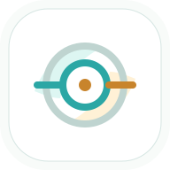

I need to inspect faint scratches on a reflective metal surface. The camera is fixed above the part.
ME

IOO Industrial Optics OnlineDescribe the defect, surface, camera angle, space limit, or current failure mode. IOO keeps recommended products nearby while the page stays bright, quiet, and low-glare.